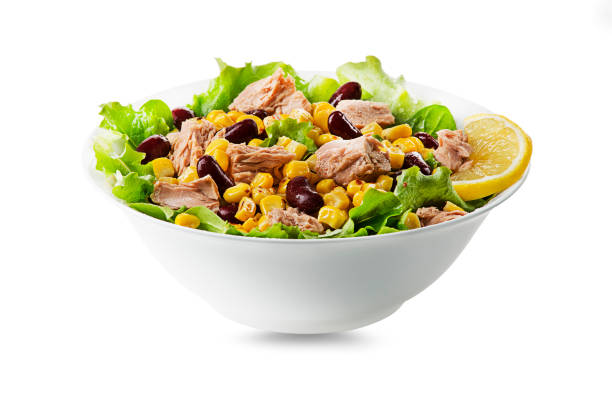

Summer Tuna Salad

Perfect for summer light Tuna and Red Kidney Bean salad.
Enjoy a light, refreshing and healthy salad that will keep you feeling fuller for longer.
Ingredients
- Half a head of lettuce torn
- One can of shredded tuna in brine drained.
- One can of red kidney beans drained.
- One can of sweetcorn in brine drained.
- Green pepper sliced thinly
- 1 Lemon - juiced
- 1 tsp olive oil
- salt and peper to taste
Steps
- Combine all ingredients in a big salad bowl.
- Salt and pepper to taste and enjoy!
Return Home